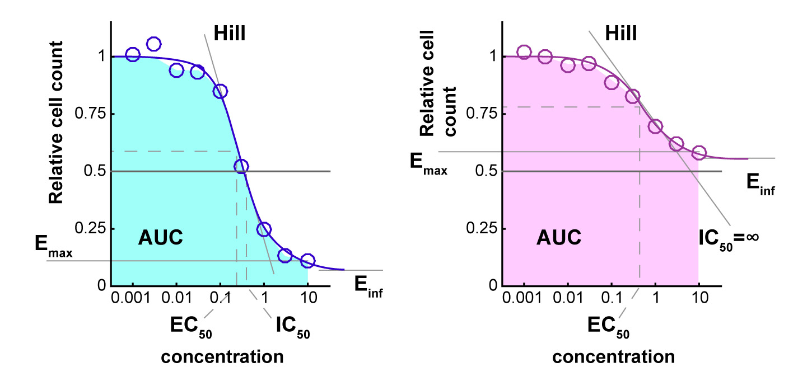

about
Commonly, relative cell count at the end of treatment is used to
assess drug response. Across a range of concentrations, the measured
cell count or a surrogate of it (e.g.
measurement of ATP using CellTiter-Glo®) is normalized to the cell count
of DMSO-treated controls grown on the same plate under the same
conditions. For each condition (combination of cell line, drug, and drug
concentration), we define the relative cell count as x(c)/xctrl,
where x(c) is the count
in the presence of drug and xctrl is
the 50%-trimmed mean of the count for control cells. Based on a
sigmoidal curve fitted to the relative cell count across different
concentrations, one can define:
- IC50 (50%
relative cell count), which is the most commonly used metric but one
that can only be defined if the relative cell count decreases during
the assay to below 50% of the
starting value;
- EC50 (half-point
of the sigmoidal curve);
- Einf (the
asymptotic efficacy), which differs from Emax (the
maximal measured efficacy); and
- AUC (area under, or over, the
curve), which captures both IC50 and
Emax to
some extent and is more robust to experimental noise than other
metrics.
More details on dose-response assays and traditional metrics can be
found in Sebaugh et al. (2010).

Examples of dose-response curves based on relative
cell count. In the first example (left),
a strong drug response results in an Einf close
to 0 and a well-defined IC50.
In the second (right), a partial response results in an Einf above
0.5 and an undefined IC50.